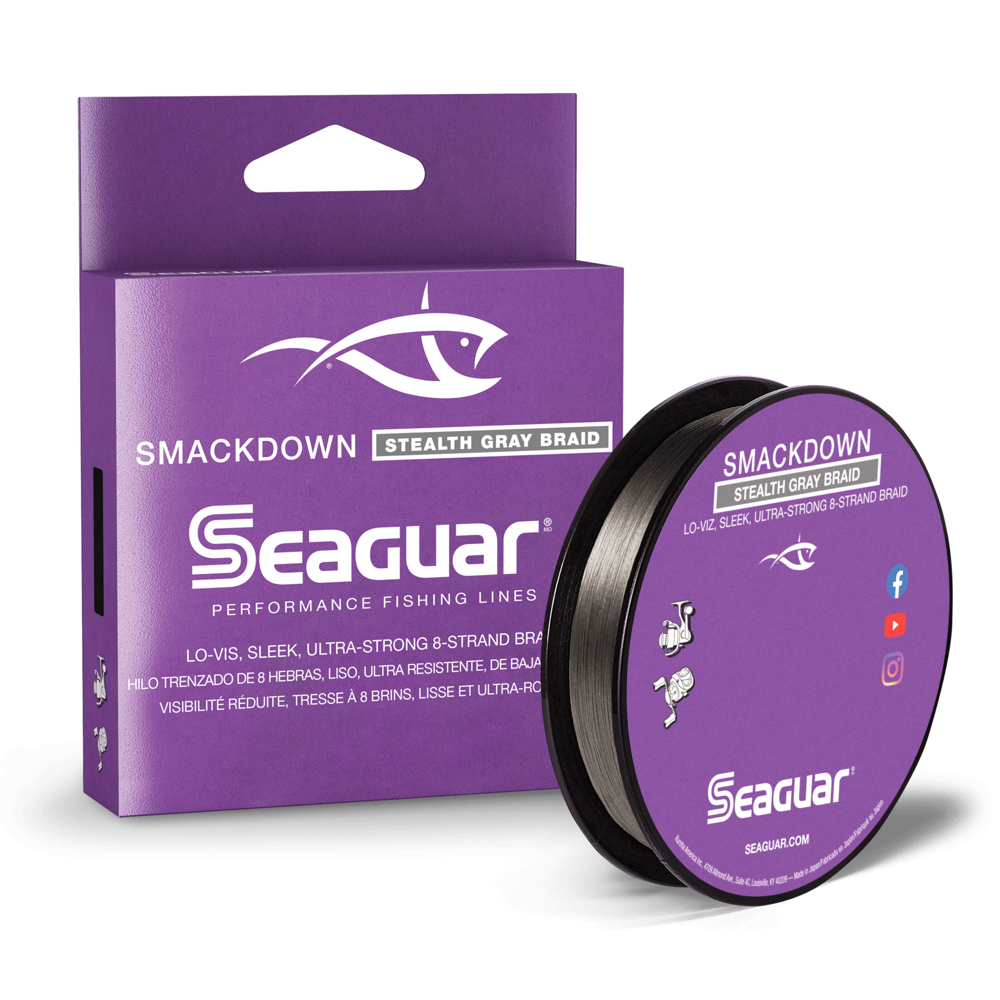

Seaguar Smackdown Braid
Diameter chart, reel capacity & backing guide

Smackdown is an eight-strand braid. This guide uses Seaguar's current Stealth Gray diameter chart and assigned 150- and 300-yard variants. Select an exact strength to compare spool capacity and plan a braid working length over mono backing.
- Construction
- 8-strand braid
- Listed strengths
- 10-65 lb
- Line type
- Braid main line
Is Smackdown right for your setup?
Smackdown makes sense to consider when braid is the line you want to cast and you will choose any leader separately. Stealth Gray is the lower-visibility color in the manufacturer's range. Diameter still matters for spool space and handling; the name or pound-test label alone does not establish how much your reel will hold.
How much Smackdown will fit?
Calculated estimates, not measured fills. Stop at the reel manufacturer's fill level even if some line remains.
Seaguar Smackdown diameter chart
Seaguar's current Stealth Gray chart and selector agree on these diameter pairs. They can differ from older retail references; use your package's diameter when it differs.
| Strength | Inches | mm | Spools (yd) |
|---|---|---|---|
| 0.008 | 0.205 | 150, 300 | |
| 0.009 | 0.235 | 150, 300 | |
| 0.010 | 0.260 | 150, 300 | |
| 0.011 | 0.285 | 150, 300 | |
| 0.013 | 0.330 | 150, 300 | |
| 0.015 | 0.370 | 150, 300 | |
| 0.016 | 0.405 | 150, 300 |
Choosing your Smackdown strength
For spinning tackle, consider the lower end of the 10-65 lb range against your rod, cover, and target fish. A 10 or 15 lb braid setup serves a different purpose from a 50 or 65 lb setup. Do not choose the heavier line solely because its breaking-strength number is larger.
On a baitcaster, choose enough physical diameter for the presentation and reliable line management, then check the capacity. Thin braid under load can dig into underlying wraps, so a mathematically generous capacity is not an instruction to use the thinnest option.
Older listings may show different Smackdown diameters. The current Stealth Gray chart used here lists 20 lb at .010 inch and 30 lb at .011 inch. If your package states something different, enter that actual package diameter in the homepage calculator instead of assuming the two versions will pack identically.
This is a specification-based setup guide, not a hands-on Smackdown performance test.
Want a guided recommendation?
Continue in the Setup WizardSame pound test, different diameters
At your selected strength
Loading diameter comparisons...
What changes with another line?
Nearby diameters in the line database
| Line | Strength | Inches | Difference |
|---|---|---|---|
| Loading line database... | |||
Backing, working line & leaders
Plan a useful braid length
Choose a working length that covers casting, runs, and retying. A 150-yard package may be sufficient for that working section even when your reel's full braid capacity is much larger.
Prevent arbor slip
Use a secure attachment appropriate to your reel. Mono backing can provide an anchor and occupy unused spool space; follow the reel manufacturer's braid-attachment guidance and do not confuse backing with a short leader.
Choose the leader separately
A mono or fluorocarbon leader is the section nearest the lure. Choose it for the presentation and cover rather than automatically matching the braid's pound test. Its short length does not determine the reel's full braid capacity.
How Much Fits on These Reels?
Estimated full-spool capacity for the Smackdown strength selected above, with no backing. These are calculated examples, not physical tests or recommendations for every pairing.
Loading capacity estimates...
Smackdown questions, answered
Is Smackdown fluorocarbon?
No. This is eight-strand braided main line. A fluorocarbon leader may be added at the lure end, but that does not change the braid into fluorocarbon.
Why not calculate from the mono-equivalent label?
Mono equivalence is not a universal diameter standard. ReelCalc uses the numeric diameter of the selected product rather than substituting a generic mono pound test for it.
Are these capacities for Flash Green too?
This page's verified source is the current Stealth Gray listing. Check the numeric diameter on the exact Flash Green package before applying the same capacity, especially for older stock or a different market.
Specifications & sources
Specifications checked against Seaguar's assigned product variants on 2026-09-12 and its published chart. Unassigned package combinations are excluded. Stock and package design can change; use the diameter printed on your own package if it differs.
Calculations use the catalog's listed inch diameters. Published inch and millimeter values may differ slightly because of rounding.
- Official Seaguar Smackdown specifications Product construction, diameter entries, and assigned retail package lengths.
- Seaguar Smackdown specification chart Manufacturer chart checked alongside current product variants.